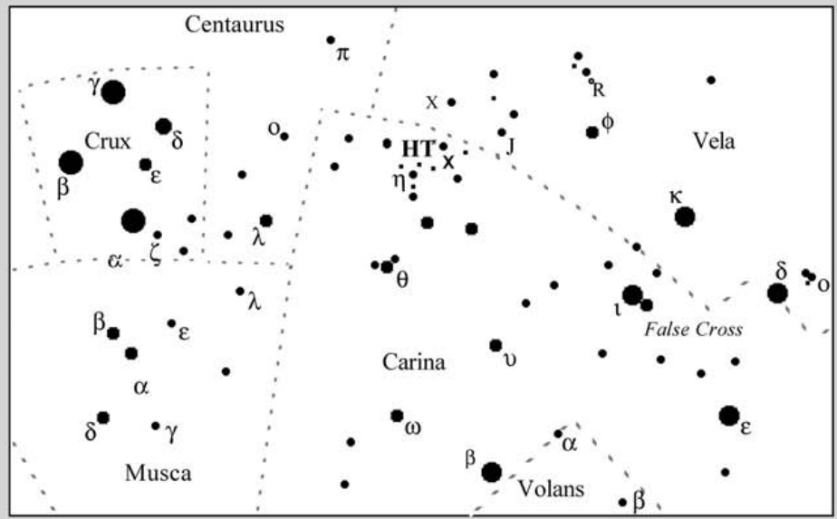

小珠宝盒星团 · Gem Cluster (NGC 3293)

船底座（Carina）的南部天空中，散布着一片令观测者屏息凝视的天体——NGC 3293，一个紧凑而璀璨的疏散星团。在这个被银河系尘埃遮蔽的区域里，它宛如一枚被遗忘在宇宙沙滩上的珍珠，以惊人的光芒穿透深邃的虚空，向我们展示着恒星形成的壮丽诗篇。
In the southern sky of the constellation Carina, there lies a celestial object that makes observers hold their breath—NGC 3293, a compact and dazzling open cluster. Nestled within a region veiled by Milky Way dust, it appears like a pearl scattered on the cosmic shore, piercing the deep void with astonishing brilliance and presenting us with an epic poem of star formation.
"It's an unusually compact cluster of brilliant stars."
这个星团以其异常紧凑的恒星分布和令人目眩的光辉而著称。当你的望远镜指向这片天区时，首先抓住你注意力的并非单颗恒星，而是一整片交织在一起的光芒——那是数十颗恒星在仅仅8弧分的空间内同时闪耀。NGC 3293的距离约8300光年，在这个距离上，这相当于大约20光年的真实直径，但对于如此多的恒星来说，这个空间仍然显得极为拥挤。
This cluster is renowned for its unusually compact distribution of stars and dazzling radiance. When your telescope points toward this region, what first captures your attention isn't a single star, but an interwoven tapestry of light—dozens of stars shining simultaneously within a mere 8 arcminutes of sky. At NGC 3293's distance of approximately 8,300 light-years, this translates to roughly 20 light-years in actual diameter, yet for so many stars, this space still feels remarkably crowded.
"The most striking thing about the cluster is the bright orange star at its heart."
这个星团最引人注目的特征是位于其核心位置的一颗明亮橙色恒星。这颗K型超巨星如同一位威严的王者，端坐于星团中央，周围环绕着数十颗蓝白色的年轻恒星同伴。这颗橙色巨星的存在向我们揭示了一个重要事实：这个星团已经足够年老，使得最 massive 的恒星已经离开了主序星阶段，膨胀成为超巨星。估算显示，NGC 3293的年龄约为1000万至1200万年——在天文尺度上，这仅仅是一个短暂的瞬间。
The most striking feature of this cluster is the bright orange star at its heart. This K-type supergiant sits like a majestic monarch at the cluster's center, surrounded by dozens of blue-white young stellar companions. The presence of this orange giant tells us something profound: the cluster is old enough that its most massive stars have evolved off the main sequence, swelling into supergiants. Estimates suggest NGC 3293 is approximately 10 to 12 million years old—a mere blink of an eye on the astronomical timescale.
"The cluster is a treasure chest of sparkling gems."
NGC 3293常被称为"小珠宝盒"（Gem Cluster），这个称号实至名归。在双筒望远镜中，它呈现为一团模糊的光斑，边缘有细碎的光芒溢出。而在中等口径的望远镜中，这团模糊便会逐渐分解为独立的星点——每一颗都如宝石般璀璨，每一次眨眼都似乎在重新排列它们的相对位置。更大的望远镜则能揭示更深层的美：星团边缘的暗弱恒星、星场中隐约可见的星际尘埃，以及那颗令人无法忽视的橙色心脏。
NGC 3293 is often called the "Gem Cluster," and this nickname is most deserved. In binoculars, it appears as a hazy glow with delicate light spilling from its edges. In medium-aperture telescopes, this haze resolves into individual points of light—each a gem-like star, their relative positions seeming to shift with each glance. Larger instruments reveal deeper beauty: faint stars at the cluster's periphery, wisps of interstellar dust in the surrounding star field, and that captivating orange heart that simply cannot be ignored.
关键参数 / Key Parameters
| 参数 / Parameter | 值 / Value |
|---|---|
| 类型 / Type | 疏散星团 / Open Cluster |
| 星座 / Constellation | 船底座 / Carina |
| 赤经 / Right Ascension | 08h 32m |
| 赤纬 / Declination | -52° 30' |
| 距离 / Distance | ~8,300 光年 / ~8,300 light-years |
| 视星等 / Apparent Magnitude | 4.7 |
| 视直径 / Apparent Diameter | 8' |
| 真实直径 / Actual Diameter | ~20 光年 / ~20 light-years |
| 年龄 / Age | ~10-12 百万年 / ~10-12 million years |
| 成员星数量 / Number of Members | ~50-60 颗 / ~50-60 stars |
| 最亮星光谱 / Brightest Star Spectral Type | K型超巨星 / K-type Supergiant |
观测体验 / Observing Experience
当夜幕降临，将你的望远镜对准船底座南部的这片天区时，准备好迎接一场视觉盛宴。NGC 3293会在目镜中缓缓浮现——起初只是视野边缘一抹隐约的光芒，随着你的目光聚焦，它逐渐凝聚成一个令人屏息的恒星群落。双筒望远镜足以让你欣赏到它整体的光晕和轮廓，但如果你想要真正领悟这个"珠宝盒"的精髓，至少需要一台4英寸（约100毫米）口径的望远镜。
As night falls and you point your telescope toward this southern region of Carina, prepare for a visual feast. NGC 3293 will gradually emerge in your eyepiece—at first merely a faint glow at the edge of the field of view, but as your gaze focuses, it coalesces into a breathtaking stellar congregation. Binoculars are sufficient to appreciate its overall glow and form, but if you truly wish to grasp the essence of this "jewel box," you'll need at least a 4-inch (100mm) aperture telescope.
当星团分解为独立恒星的那一刻，你会听到自己在黑暗中不由自主地倒吸一口气。数十颗蓝白色恒星在视野中舞动，而中央那颗温暖的橙色超巨星如同众星拱卫的宝石，成为整个画面的焦点。在良好的观测条件下，甚至可以用余光法瞥见星团周围暗弱的弥漫光芒——那是数百颗更暗淡、更遥远的银河系恒星的集体贡献。
The moment the cluster resolves into individual stars, you'll find yourself involuntarily gasping in the darkness. Dozens of blue-white stars dance in your field of view, while that warm orange supergiant at the center—gem among its retinue of stars—becomes the focal point of the entire tableau. Under excellent observing conditions, you might even catch glimpses of faint diffuse light surrounding the cluster—that's the collective contribution of hundreds of dimmer, more distant Milky Way stars.
但请记住，NGC 3293并非孤立的奇迹——它坐落于船底座这个拥有众多深空宝藏的星座之中。著名的 carina nebula（船底座星云）就在不远处绽放，而杜鹃座小麦哲伦云在南方地平线上若隐若现。当你完成对这一目标的观测后，你可能会发现自己根本舍不得移开目光，因为你知道，下一秒钟，那片漆黑中或许就藏着另一个等待你去发现的秘密......
But remember, NGC 3293 is no isolated wonder—it rests within Carina, a constellation bursting with deep-sky treasures. The famed Carina Nebula blazes not far away, while the Small Magellanic Cloud in Tucana glimmers on the southern horizon. When you finish observing this target, you might find yourself reluctant to look away, because you know that in the very next moment, another secret might be waiting to be discovered in that darkness...
🔒 受限于篇幅，本文仅展示部分样章。O'Meara 先生完整的观测手记、实测数据及未公开的独家配图，请参阅原著双语典藏版。
👉 立即在闲鱼获取《DEEP-SKY COMPANIONS》中英双语高清典藏版